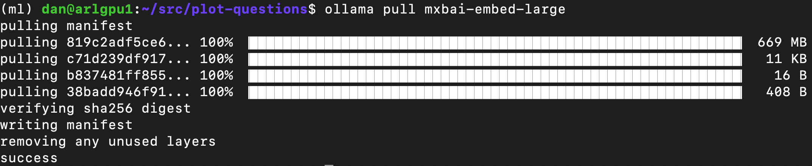

Creating a Similarity Plot
This example assumes you have a local GPU with Ollama or you can get access to a service that creates embeddings.
Install and Test Ollama
Install Ollama

Prompt
I have a list of 100 questions frequently asked in an undergraduate course on circuits. I want to create a 2-D plot that groups similar questions by creating embeddings for each question. I also have access to a GPU that is running ollama and has the llama 3.2 model available. Can you suggest a Python program that will take the input file of questions separated by newlines and outputs a 2D plot grouping similar questions together?
Test Ollama Embeddings Service
1 2 3 4 5 | |
Response
Note
I have update the response to include some links.
ChatGPT o1-min Thought for 4 seconds
Certainly! Below is a Python program that reads a list of questions from a text file, generates embeddings for each question using the Llama 3.2 model via Ollama, reduces the dimensionality of these embeddings to 2D using UMAP, and finally plots the questions on a 2D scatter plot where similar questions are grouped together.
Prerequisites
-
Ollama Setup:
- Ensure that Ollama is installed and running on your GPU machine.
- Verify that the Llama 3.2 model is available and configured to generate embeddings.
- Make sure the
ollamacommand-line tool is accessible from your environment. -
Python Libraries:
-
Install the required Python libraries using
pip:
1 | |
Python Program
1 2 3 4 5 6 7 8 9 10 11 12 13 14 15 16 17 18 19 20 21 22 23 24 25 26 27 28 29 30 31 32 33 34 35 36 37 38 39 40 41 42 43 44 45 46 47 48 49 50 51 52 53 54 55 56 57 58 59 60 61 62 63 64 65 66 67 68 69 70 71 72 73 74 75 76 77 78 79 80 81 82 83 84 85 86 87 88 89 90 91 92 93 94 95 96 97 98 99 100 101 102 103 104 105 106 107 108 109 110 111 112 113 114 115 116 117 118 119 120 121 122 123 124 125 | |
Explanation of the Code
-
Reading Questions:
-
The
read_questionsfunction reads the input file (questions.txtby default) and loads each question into a list after stripping any leading/trailing whitespace. -
It also checks if the file exists and exits gracefully with an error message if not.
-
Generating Embeddings:
-
The
get_embeddingfunction uses Python'ssubprocessmodule to call theollamaCLI and generate an embedding for a single question. - It assumes that the command
ollama embeddings llama-3.2 "question"returns a JSON object with anembeddingfield containing the embedding vector. - Error handling is included to catch issues with the subprocess call or JSON parsing.
-
The
generate_embeddingsfunction iterates over all questions, generates their embeddings, and collects them into a list. It also adds a small delay (time.sleep(0.1)) between calls to prevent overwhelming the CLI. -
Dimensionality Reduction:
-
The
reduce_dimensionsfunction uses UMAP (Uniform Manifold Approximation and Projection) to reduce the high-dimensional embeddings to 2D. -
UMAP is chosen for its efficiency and ability to preserve the global structure of the data. You can also use t-SNE or PCA if preferred.
-
Plotting:
-
The
plot_embeddingsfunction creates a scatter plot using Matplotlib and Seaborn. - Each point represents a question, and they are annotated with their respective indices for easy reference.
-
The plot is saved as
questions_plot.pngand also displayed. -
Main Execution Flow:
-
The
mainfunction orchestrates the entire process: reading questions, generating embeddings, reducing dimensions, and plotting. - It specifies the input file (
questions.txt), which you should replace with the path to your actual file containing the 100 questions.
Usage Instructions
-
Prepare the Input File:
-
Create a text file named
questions.txt(or any name you prefer) with each question on a separate line. For example:
Sample questions.txt file:
1 2 3 | |
-
If your input file has a different name or path, update the
input_filevariable in themainfunction accordingly. -
Test your Ollama configuration
-
Run the Plot Questions Script:
-
Save the Python script to a file, for example,
plot_questions.py. -
Open a terminal and navigate to the directory containing
plot_questions.py. -
Execute the script:
1 | |
-
View the Plot:
- After running, the script will display a 2D plot showing the grouping of similar questions.
- The plot will also be saved as
questions_plot.pngin the same directory.
Notes and Tips
-
Embedding Size: The script assumes that the embedding size from Llama 3.2 is 768 dimensions. If it's different, adjust the
embedding_sizevariable accordingly. -
Error Handling: The script includes basic error handling for missing files, subprocess errors, and JSON decoding issues. Ensure that Ollama is correctly set up and the
ollamaCLI is functioning as expected. -
Performance: For 100 questions, the script should run relatively quickly. If you plan to scale this up, consider optimizing the embedding generation process, possibly by batching requests if Ollama supports it.
-
Visualization Enhancements: You can enhance the plot by adding colors based on clusters, interactive tooltips, or integrating with libraries like Plotly for interactive visualizations.
-
Caching Embeddings: To save time on subsequent runs, especially if the questions don't change, consider caching the embeddings to a file (e.g., JSON or pickle) and loading them instead of regenerating.
I hope this helps you effectively visualize and group similar circuit questions! If you encounter any issues or have further questions, feel free to ask.
2/2
4o
requestAnimationFrame((function(){window.__oai_logTTI?window.__oai_logTTI():window.__oai_SSR_TTI=window.__oai_SSR_TTI??Date.now()}))